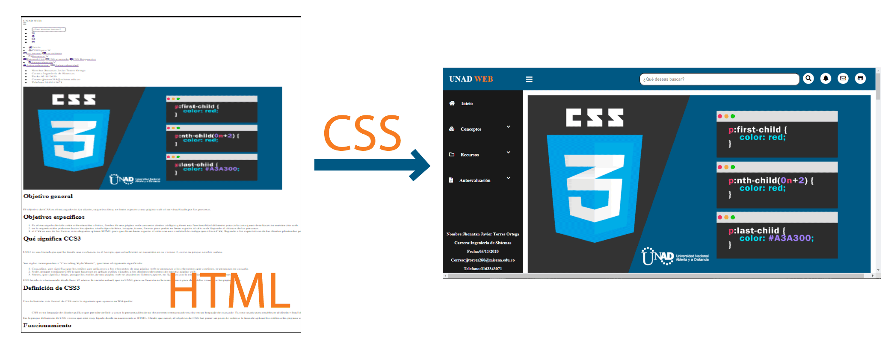

CSS INTERNO
Una vez creada la estructura del documento y definidos sus contenidos a nivel semántico con HTML, podemos darle una apariencia y presentación personalizada mediante la utilización de CSS (Hojas de Estilo en Cascada / 'Cascade Style Sheets' ).
Con CSS podemos indicar el aspecto de cada elemento de la página, como por ejemplo: el tipo de letra de un título, el color con que se mostrará un enlace o el interlineado de un párrafo o una lista.
También veremos que CSS puede posicionar y dimensionar los distintos bloques de la página, de forma que podamos establecer la disposición de todos los elementos en la misma.
Solo haremos una breve introducción para ver los conceptos básicos de CSS que nos ayuden a entender mejor el diseño y la construcción de Sitios Web.

Formas y preferencias al aplicar estilos
Las Hojas de Estilo (o Estilos) se pueden incluir de 3 formas diferentes:
- Estilo en línea (inline): definido dentro de las propias etiquetas HTML
- Hoja de estilo interna: en la sección
<head>.del mismo documento HTML
¿Por qué se denominan hojas de estilos 'en cascada'? Pues porque estas tres formas de incluir estilos no son excluyentes y pueden combinarse (por ejemplo utilizando una hoja de estilos externa general e incluyendo estilos en línea en algunas etiquetas del documento). En caso de conflicto, prevalece el estilo más 'interno'.
Estilo en línea
La forma genérica de incluir un estilo en línea (inline) sería:
<nombre_etiqueta>< style="PROPIEDAD1 : VALOR ; PROPIEDAD2 : VALOR ;.....">
Lo vemos con un ejemplo:
<p>< style=”color: green; font-family: impact;”>Texto con tipografía Impact verde
cómo se visualizaría en nuestro navegador:
Texto con tipografía Impact verde
En el ejemplo de arriba, incluimos en una etiqueta párrafo <p>, el atributo 'style', cuyo valor son dos características de estilo de la fuente a mostrar: color verde y tipografía Impact.
Hoja de estilo interna
Vemos una hoja interna en una página HTML:

¿Qué podemos observar en ese ejemplo?:
- Incluimos las reglas de estilo entre las etiquetas
<style>....</style>(ya no es obligatorio el atributo 'type', aunque es válido y muy usado:<style>type=”text/css”) - Elegimos el elemento (selector) al que queremos dar un determinado estilo de presentación (en este caso los párrafos 'p') e incluimos entre llaves “{ }” las características (declaraciones) que vamos a aplicarle, separadas cada una por ';'.
- Se suele separar cada declaración de estilo en una linea para mayor claridad, pero no es obligatorio.
- Podemos agrupar varios selectores que compartan el mismo (sub)conjunto de estilos. Por ejemplo: p,ul {........} (se aplicarán los mismos estilos definidos entre las llaves a los párrafos (p) y a las listas (ul). Por supuesto se pueden definir otros estilos diferentes adicionales a 'p' y 'ul' en esa misma hoja.
- Según vemos en la imagen de abajo, cada declaración se compone de una propiedad, en este caso: font-size (tamaño de letra) y un valor, en este caso: large (grande). La regla de estilo sería el conjunto del selector y la declaración

Estructura de regla de estilo CSS
Algunas aclaraciones adicionales:
- Hay propiedades a las que se le pueden asignar varios valores ya que realmente son un conjunto de propiedades en sí mismas. Por ejemplo 'margin' (margin) engloba a los márgenes de los 4 lados (arriba-derecha-abajo-izquierda). Cada uno de ellos es una propiedad en sí. Lo veremos después.
- Explicaremos más adelante que es posible utilizar otro tipo de selectores, además de las etiquetas HTML, con los atributos 'id' y 'class'
- En WordPress, veremos que hay editores visuales y themes (plantillas de diseño) que permiten incluir estilos de forma similar a esta, a nivel de página